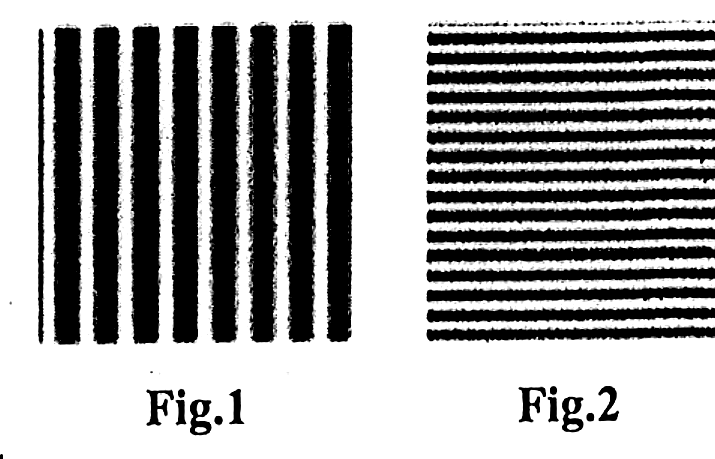
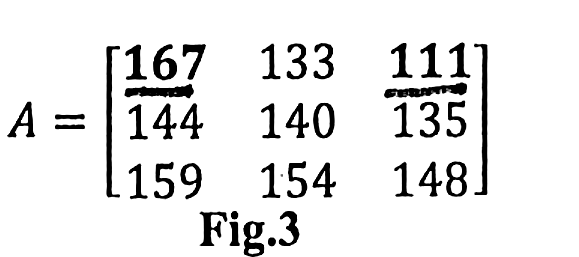
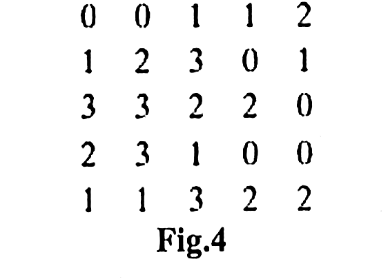
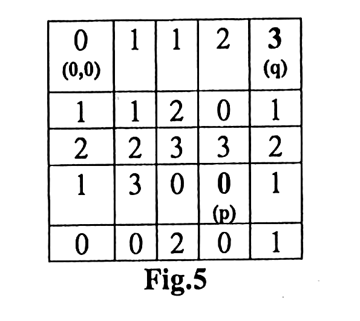
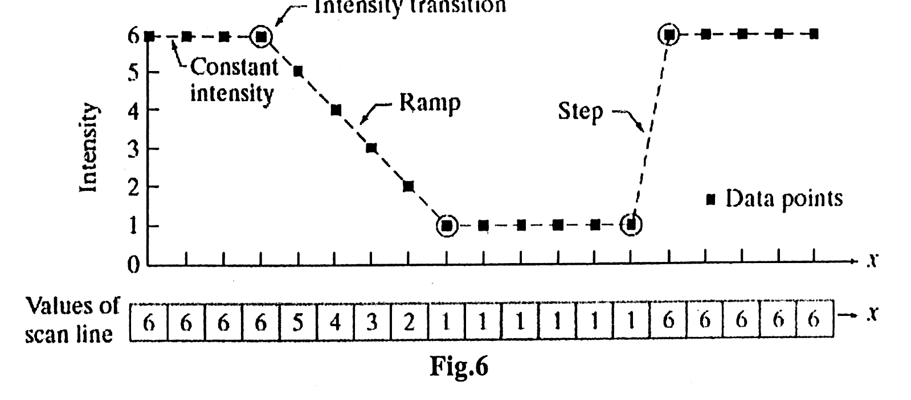
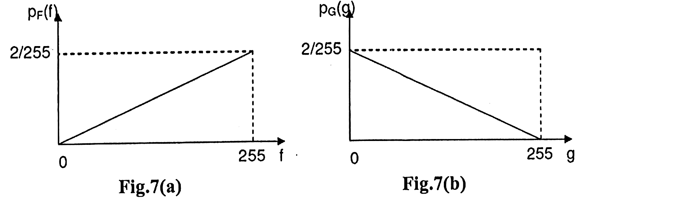

The papers
Only one past mid-sem paper exists for this course — September 2025, the first year it ran as a core elective. It is worked out here in full, and then a predicted paper for September 2026 that takes account of three lectures of spatial filtering the 2025 cohort had not yet been taught.
What actually gets asked
1 papers read end to endOne paper is not a pattern, so this page is honest about that. What one paper does give you is the examiner’s style, and that is unusually informative here: the marks are split almost exactly along the course outcomes, the questions come straight out of Gonzalez & Woods in the same order as the lectures, and every single one of them wants a calculation or a drawing rather than a description.
| Topic | 25 | of 1 |
|---|---|---|
| 2D Fourier spectrum of a sinusoid or an impulse pair | 1 | |
| Convolution theorem read in the frequency domain | 1 | |
| Local versus global histogram processing | 1 | |
| Spatial filter masks — mean, Gaussian, Pascal | 1 | |
| Bit-plane slicing and reconstruction | 1 | |
| Mean and variance of a small image, two ways | 1 | |
| N₄, N₌, N₈ and the shortest 4-, 8-, m-paths | 1 | |
| First and second derivatives of a scan line | 1 | |
| Histogram matching, discrete, worked as a table | 1 | |
| Continuous transformation derived from two PDFs | 1 |
filled = it appeared that year · tinted rows came up in every paper we have
Read it this way
Nothing was descriptive. Every single sub-question wanted a number, a matrix, a derivation or a drawing. There was no “explain the applications of image processing”, no “list the fundamental steps”. Revise by working problems, not by reading.
Q2 said “attempt any three” out of four. That is a genuine gift: one whole topic can be skipped. Read all four before choosing, because the histogram-matching one in Q4 is unavoidable and the bit-plane one in Q2 takes ninety seconds.
The big change for 2026. Lectures 21, 22 and 23 — mask processing, smoothing and median filters, the Laplacian, high-boost and the gradient operators — were delivered in September 2026, after the 2025 paper was set. They are firmly on the syllabus now, they are the natural continuation of the Q3(b) derivative question, and they are full of exactly the small calculations this examiner likes. Our predicted paper therefore gives them real weight. If you gamble anywhere, do not gamble there.
Predicted paper — September 2026
our reading, with full solutionsInstruction. (i) Assume necessary data wherever required. (ii) The figure to the right indicates marks.
Solution
Zero-pad first. Write the padded array out before doing any arithmetic — most lost marks here come from taking pixels from the wrong place.
g(0,0) — the mask hangs off the top and the left, so five of the nine values are padded zeros:
g(0,1) — only the row above is missing, so three zeros come in:
g(0,0) = 8.44 · g(0,1) = 10.56
Comment worth adding: the padding pulls the border pixels down towards zero, so a zero-padded average always darkens the edges of the image. That is the price of this method, and it is why replicating or mirroring the edge exists as an alternative.
Solution
(i) A single impulse at the origin.
F(u,v) = 1 — constant magnitude everywhere
Spectrum: a completely uniform white plane. A perfectly localised point in space contains every spatial frequency in equal measure — which is the same statement as “a delta function has a flat spectrum” in one dimension.

(ii) Two impulses, symmetric about the origin along x.
F(u,v) = cos(2πua) — independent of v
Spectrum: |F| = |cos(2πua)|, which is a set of vertical bright and dark bands running parallel to the v-axis, with the bands spaced 1/(2a) apart along u. The further apart the two impulses are in space, the more closely spaced the bands are in frequency — the usual reciprocal relationship.

An impulse pair always transforms to a cosine, and a cosine always transforms to an impulse pair — the Fourier transform swaps the two. That one fact answers every question of this type, in either direction.

Solution
Arithmetic mean — add all nine and divide:
Median — sort all nine, including the centre pixel, and take the middle one:
mean = 36.9 · median = 24
The primary difference. The mean filter is linear — it multiplies and adds, so every input, however wrong, contributes to the output. The median filter is an order-statistic filter and therefore non-linear — it ranks the values and picks one, so an extreme value is never selected.
For salt-and-pepper noise, use the median. Two reasons, and both are needed for full marks:
- The 128 here is a noise spike. The mean lets it drag the answer up to 36.9 — and worse, that single bad pixel contributes to all nine of the output pixels around it, so one speck becomes a gray smudge.
- The median simply never chooses it. The noise pixel is removed outright and replaced by a genuine neighbouring value, so at the same mask size you get far better noise reduction with considerably less blurring.

Solution
Definition.
Each second derivative as a difference:
Add them:
Read the coefficients straight off — +1 on each of the four side neighbours, −4 on the centre, 0 on the corners:
Why it is not an enhanced image. The Laplacian is a pure derivative operator, so it responds only to change. Every region of slowly varying gray gives zero. The result is therefore edges and fine detail sitting on a dark, featureless background — a map of the discontinuities, not a picture.
The one-pass sharpening mask. Add the edges back onto the original:
Composite mask [0 −1 0; −1 5 −1; 0 −1 0]
A pure derivative mask has coefficients summing to 0, so it gives no response on a flat region. A sharpening mask has coefficients summing to 1, because it is “the original, plus its edges” and must preserve average brightness. Add up any mask you write and you will know at once which one you have built.
And the sign pairing: centre −4 → use g = f − ∇²f. Centre +4 → use g = f + ∇²f. Say which convention you are using before you start.

Solution
The Sobel masks:
Gradient magnitude ≈ 160
What the components say. Gx is large and Gy is exactly zero, so the brightness is changing rapidly down the columns and not at all across the rows. The gradient vector therefore points straight down, and since the gradient points across an edge, the edge itself runs horizontally — which is exactly what the window shows: a flat region of 10s sitting on a flat region of 50s.
Why the 2. The middle coefficient of each row is ±2 to give more weight to the centre point, which smooths as well as differentiates. That is the only difference between Sobel and Prewitt, and it makes Sobel less sensitive to noise.
The free check. Every gradient mask’s coefficients sum to zero, so it gives a response of 0 in an area of constant gray. Add up either mask above to confirm you have copied it correctly.

Solution
Write each value in 8-bit binary and label the planes. The 8th bit plane is the MSB (weight 128) and the 7th is the next one down (weight 64).
Keep only bits 8 and 7, set the rest to zero:
200 → 192 · 75 → 64
The comment that earns the last mark. Two planes out of eight can only produce four distinct output values — 0, 64, 128 and 192 — so the reconstruction is a coarse four-level version of the image. The large-scale shapes survive, because most of a pixel’s value lives in its top bits, but all fine shading is gone. That is exactly why the higher-order planes are said to carry the visually significant data and the lower ones the subtle detail.
Solution
(i) The neighbourhoods of p = (3,0). These are positional sets and do not depend on V:
Always say this: p is a border pixel, so several of its neighbours fall outside the image and it has fewer than eight. Examiners look for that sentence.
(ii) Paths from p = (3,0) to q = (0,3), with V = {1,2}. First mark which pixels are in V:

Shortest 4-path. Only side steps are allowed, and every pixel on the way must be in V:
The city-block lower bound is D₄ = |3−0| + |0−3| = 6, so 6 is optimal.
Shortest 4-path = 6
Shortest 8-path. Diagonals now count as one step:
The chessboard lower bound is D₈ = max(3, 3) = 3, so we should check whether 3 is reachable. A 3-step path needs three diagonal moves: (3,0)→(2,1)→(1,2)→(0,3). But (1,2) = 0, which is not in V, so that route is blocked and 4 is the best available.
Shortest 8-path = 4
Shortest m-path. Test each diagonal step of the 8-path against the m-adjacency rule — a diagonal step is allowed only if N₄(p) ∩ N₄(q) contains no pixel from V.
Shortest m-path = 6, and it is unique
4-path 6 · 8-path 4 · m-path 6. The m-path can never be shorter than the 8-path, because m-adjacency only ever removes links from 8-adjacency, never adds them. What it buys in exchange is that the path is unique — with 8-adjacency there were several 4-step routes and no way to call one of them “the” path, which is the whole reason m-adjacency was invented.
Solution
First derivative f′(x) = f(x+1) − f(x), taken from the second sample to the penultimate one:
Second derivative f″(x) = f(x+1) + f(x−1) − 2f(x), over the same range:
Comments — the part the marks are actually for.
| Feature | First derivative | Second derivative |
|---|---|---|
| Constant regions (7 7 7 and 3 3 3) | zero | zero |
| Along the ramp (7→3) | Non-zero all the way, a steady −1, so it produces a thick response spanning the whole ramp | Zero in the middle of the ramp; non-zero only at the two ends, so a thin response marking just the corners |
| Isolated point (the single 7) | +4 then −4 | +4, −8, +4 — a much stronger, sharper response |
| Zero crossing | none | Yes — the sign change between the −8 and the +4 pins the feature to the exact pixel |
The conclusion: first derivatives give thicker edges and respond to gradual change; second derivatives respond far more strongly to fine detail such as isolated points and thin lines, and their zero crossings locate an edge precisely. That is why the Laplacian — a second derivative — is the standard sharpening filter, while the gradient — a first derivative — is the standard edge detector.
Solution
Step 1 — build the histogram. Count each gray level:
| rk | 0 | 1 | 2 | 3 | 4 | 5 | 6 | 7 |
|---|---|---|---|---|---|---|---|---|
| nk | 0 | 1 | 5 | 5 | 4 | 1 | 0 | 0 |
Check: 0+1+5+5+4+1+0+0 = 16 ✓
Step 2 — the running sum and the transformation.
| rk | nk | cumulative | sk = 7×cum/16 | rounded |
|---|---|---|---|---|
| 0 | 0 | 0 | 0.0000 | 0 |
| 1 | 1 | 1 | 0.4375 | 0 |
| 2 | 5 | 6 | 2.6250 | 3 |
| 3 | 5 | 11 | 4.8125 | 5 |
| 4 | 4 | 15 | 6.5625 | 7 |
| 5 | 1 | 16 | 7.0000 | 7 |
| 6 | 0 | 16 | 7.0000 | 7 |
| 7 | 0 | 16 | 7.0000 | 7 |
Step 3 — the mapping and the output image.
Step 4 — the output histogram.
| s | 0 | 1 | 2 | 3 | 4 | 5 | 6 | 7 |
|---|---|---|---|---|---|---|---|---|
| count | 1 | 0 | 0 | 5 | 0 | 5 | 0 | 5 |
Check: 1+5+5+5 = 16 ✓

The output histogram is not flat, and it never will be in the discrete case. Equalisation cannot split a gray level — all five pixels of value 2 must go to the same new value — so the bars can only be moved and merged, never divided. What it does achieve is spreading them over the full range, which is where the contrast improvement comes from. Only in the continuous case is the result exactly uniform.
Solution
The method for histogram matching in the continuous case is always the same three steps: equalise the input, equalise the target, then set the two equal and solve for z.
Step 1 — equalise the input.
Step 2 — equalise the target.
Step 3 — set G(z) = T(r) and solve for z. Both images, after equalisation, must have the same uniform distribution, so their transformed values must match:
z = ∛[ r²(L−1) ]
Verification at the two ends — a monotonic mapping of the full range must fix both endpoints:
A worked value, for an 8-bit image where L − 1 = 255:
So mid-grey is pushed up to 161. That is the right direction: the target PDF 3z²/(L−1)³ grows as z², so it wants more pixels at the bright end than the input’s linear PDF supplies, and the transformation obliges by stretching values upwards.
The formal answer is z = G−1[T(r)], and it is tempting to find G−1 first. Do not. Setting G(z) = T(r) and solving the resulting algebra for z is the same thing and is almost always easier — here it is a single cube root instead of an inverse function.
Mid-sem, September 2025
EC-341 · 30 marks · the only past paperThe first mid-sem for this course. Four questions, marks split by course outcome, and not a single descriptive sub-question — everything wants a number, a matrix or a drawing.

Solution
(i) The two spectra.
Fig.1 is a sine wave varying along x with 8 cycles across the image — it looks like vertical stripes. A sinusoid transforms to a pair of impulses, placed at its frequency on the axis it varies along:
Fig.2 varies along y with 16 cycles — horizontal stripes. Same rule, other axis:
(ii) The spectrum of the convolution. Use the convolution theorem — convolution in space is multiplication in frequency:
Now look at where each one is non-zero:
The result is a single impulse at the origin — the convolved image is a uniform grey field
Every stripe pattern has vanished. The DC terms of the two images multiply to give the constant, and every other frequency component is killed because the other image has nothing at that frequency to multiply it by.
Convolving with a pure sinusoid is a filter that passes only the frequency of that sinusoid. Fig.2 contains no energy at u = ±8, so Fig.1’s stripes are removed entirely; and Fig.1 contains no energy at v = ±16, so Fig.2’s stripes are removed too. Nothing is left but the average brightness.
If the two sinusoids had been at the same frequency and on the same axis, the answer would be completely different — the impulses would coincide and the stripes would survive, amplified.

np.fft.fft2. Three non-zero points each and nothing anywhere else — which is the whole answer to part (i).
Solution
(i) f(x,y) = δ(x,y) — a single impulse at the origin.
F(u,v) = 1 — flat, constant magnitude everywhere
Spectrum: a uniform white plane, no structure at all. A perfectly localised point contains every spatial frequency equally.
(ii) f(x,y) = 0.5[δ(x, y−a) + δ(x, y+a)] — two impulses at (0, a) and (0, −a), symmetric about the origin along the y-axis.
F(u,v) = cos(2πva)
Spectrum: |F| = |cos(2πva)| — a set of horizontal bright and dark bands, running parallel to the u-axis and repeating every 1/(2a) along v.
An impulse pair transforms to a cosine, and a cosine transforms to an impulse pair. Note also the reciprocal relationship: the further apart the impulses are in space (larger a), the more closely spaced the bands are in frequency. And part (i) is just the limiting case a = 0, where the two impulses merge and the cosine flattens to the constant 1.
Solution
(i) From global to local. Global equalisation builds one transformation function from the gray-level content of the entire image and applies it to every pixel. That fails when the detail you care about lives in a small area — a few hundred pixels cannot move a histogram built from a quarter of a million, so a locally dark region stays dark.
The fix is to do exactly the same work in a small window:
- Define a neighbourhood — a square window is usual.
- Compute the histogram of the pixels inside that window only.
- Equalise it, and apply the resulting transformation to the centre pixel alone.
- Move the window to the next pixel and repeat.
(ii) Why the sliding window method.
- A new transformation for every pixel, so the enhancement adapts continuously to the local content — this is the version that reveals detail hidden in dark corners.
- No blocking artefacts. Neighbouring pixels have nearly identical windows, so their transformations are nearly identical and the output varies smoothly.
- It is cheaper than it looks. When the window moves one column, only one column of pixels leaves the histogram and one enters, so the histogram is updated incrementally rather than rebuilt — which is what makes the method practical at all.
(iii) Why the block method.
- Speed. The image is divided into non-overlapping blocks and each block is equalised once. That is one transformation per block instead of one per pixel — orders of magnitude less work.
- Simplicity, and it parallelises trivially since the blocks are independent.
The price is visible blocking artefacts: adjacent blocks get unrelated transformations, so a discontinuity appears at every block boundary. The usual compromise is to equalise per block and then interpolate between the neighbouring blocks’ transformations — which is exactly what CLAHE does.
Solution
The primary difference. Both are smoothing filters and both reduce noise, but:
| Arithmetic mean (box filter) | Gaussian | |
|---|---|---|
| Weights | All equal — a pixel at the corner of the window counts as much as the centre one | Centre heaviest, falling off smoothly with distance |
| Blurring | More — distant pixels drag the centre value a long way | Less, for the same amount of noise reduction |
| Artefacts | The mask has sharp edges, so its frequency response is a sinc with sidelobes → ringing and a boxy look | The transform of a Gaussian is a Gaussian — no sidelobes, no ringing |
| Shape | Square — it smooths more along the diagonals than along the axes | Isotropic — circularly symmetric, direction-independent |
In one sentence: for the same window size, the Gaussian gives a smoother, more natural result with better-preserved edges and no ringing, because it weights the centre most and falls off gradually instead of stopping abruptly.
Generating the 5×5 mask from Pascal’s triangle. The binomial coefficients are a discrete approximation to a Gaussian, so the row of Pascal’s triangle with five entries is the 1-D kernel:
The 2-D mask is the outer product of that row with itself — which works because a Gaussian is separable:
The normalising constant. The coefficients must sum to 1 or the image changes brightness. Here:
Mask = (1/256) × the array above
Note that the same construction gives the 3×3 Gaussian from the row 1 2 1, with a normalising sum of 4 × 4 = 16 — which is the familiar (1/16)[1 2 1; 2 4 2; 1 2 1].

Solution
Step 1 — write both values in 8-bit binary. The 8th bit plane is the MSB (weight 128) and the 7th is the next one (weight 64).
Step 2 — keep only planes 8 and 7, and zero everything else.
167 → 128 · 111 → 64
Comment. Two planes can only generate four distinct outputs — 0, 64, 128 and 192 — so the reconstruction is a coarse four-level image. The overall shapes survive, because most of a pixel’s magnitude lives in its top bits; all the fine shading is gone, because that is what the lower planes carried. This is exactly the observation the lecture makes about the higher planes holding the visually significant data.
“8th bit plane” here means the most significant bit, counting from 1 at the LSB. Some books number the planes 0 to 7 instead, in which case the same two planes would be called the 7th and 6th. Say which convention you are using in one line — it takes a second and removes the ambiguity.


Solution
Formula 1 — direct spatial average. Add every pixel and divide by how many there are:
Formula 2 — from the histogram. First count each gray level:
| ri | count ni | p(ri) = ni/25 | ri × p(ri) |
|---|---|---|---|
| 0 | 6 | 0.24 | 0.00 |
| 1 | 7 | 0.28 | 0.28 |
| 2 | 7 | 0.28 | 0.56 |
| 3 | 5 | 0.20 | 0.60 |
| total | 1.00 | 1.44 | |
Both formulas give m = 1.44 — and they must
The comparison, which is what the question is asking for. The two are the same calculation organised differently. Formula 1 walks the image pixel by pixel; Formula 2 groups the identical pixels first and weights each distinct value by how often it occurs. Grouping cannot change a sum, so the answers are identical by construction.
Why bother with the second one, then? Because it costs one pass over the histogram rather than one pass over the image. For a 4×4 toy that is no saving; for a 4096×4096 image with 256 gray levels it is 256 terms instead of 16.7 million. And once the histogram exists, every other statistic is nearly free:
Mean measures brightness; variance measures contrast. Together they are the pair used for the local adaptive enhancement in Lecture 19.

Solution

(i) Neighbourhoods of p = (3,3). Written as (row, column):
If the question wants only those neighbours whose values lie in V = {0,2,3}, check each:
(ii) Paths from p = (3,3) to q = (0,4), with V = {0,3}. Mark which pixels belong to V:
Shortest 4-path: it does not exist.
Look at q = (0,4). Its only 4-neighbours inside the image are:
No 4-path exists
The reason, which is the mark: a 4-path may only take horizontal and vertical steps between pixels that are both in V. Neither of q’s two 4-neighbours is in V, so q is completely isolated under 4-adjacency — nothing can reach it, however long the route.
Shortest 8-path. Diagonals now count, and q does have a diagonal neighbour in V:
Is 3 the minimum? The chessboard distance sets the floor:
Shortest 8-path = 3, and it is optimal
Shortest m-path. Take the same route and test its one diagonal step against the m-adjacency rule — a diagonal is allowed only if N₄(p) ∩ N₄(q) contains no pixel from V.
Shortest m-path = 3
4-path: none · 8-path: 3 · m-path: 3. The m-path here happens to equal the 8-path, because the one diagonal it needed had no route round it. That is the general rule: m-adjacency only removes a diagonal link when a way round already exists, so an m-path is never shorter than the 8-path and often the same length — what it guarantees is that the path is unique.

Solution
First derivative f′(x) = f(x+1) − f(x), computed from index 1 through 17:
Second derivative f″(x) = f(x+1) + f(x−1) − 2f(x), over the same range:
Sample computations, to show the working:
Comments — this is where the marks are.
| Region | First derivative | Second derivative |
|---|---|---|
| Constant intensity | Zero, as required | Zero, as required |
| Along the ramp (6 down to 1) | Non-zero throughout — a steady −1 all the way down, so it produces a thick response spanning the entire ramp | Zero in the middle of the ramp; non-zero only at its onset (−1) and its end (+1), so a thin response marking just the two corners |
| At the step (1 up to 6) | A single spike of +5 | A double response: +5 immediately followed by −5, of opposite sign |
| Zero crossing | None | The point between the +5 and the −5 — it locates the edge to the exact pixel |
The conclusion to write out:
- First derivatives produce thicker edges and respond throughout a region of gradual change.
- Second derivatives have a much stronger response to fine detail — isolated points and thin lines — and they are zero along ramps of constant slope.
- The second derivative’s double response of opposite sign at a step, and the zero crossing between, is what makes it useful for locating edges precisely.
- Both are zero in constant regions, which is why every derivative mask has coefficients that sum to zero.
That is exactly why the Laplacian — a second derivative — is the standard sharpening filter, and the gradient — a first derivative — is the standard edge detector.
Solution
Step 1 — equalise the INPUT histogram. sk = (L−1) × running sum of pr, so sk = 7 × (cumulative n)/45:
| rk | nk | cumulative | sk = 7×cum/45 |
|---|---|---|---|
| 0 | 10 | 10 | 1.5556 |
| 1 | 5 | 15 | 2.3333 |
| 2 | 5 | 20 | 3.1111 |
| 3 | 11 | 31 | 4.8222 |
| 4 | 5 | 36 | 5.6000 |
| 5 | 0 | 36 | 5.6000 |
| 6 | 3 | 39 | 6.0667 |
| 7 | 6 | 45 | 7.0000 |
Step 2 — equalise the SPECIFIED histogram. G(zq) = 7 × (cumulative Pz)/45:
| zq | Pz | cumulative | G(zq) |
|---|---|---|---|
| 0 | 5 | 5 | 0.7778 |
| 1 | 5 | 10 | 1.5556 |
| 2 | 5 | 15 | 2.3333 |
| 3 | 10 | 25 | 3.8889 |
| 4 | 10 | 35 | 5.4444 |
| 5 | 5 | 40 | 6.2222 |
| 6 | 5 | 45 | 7.0000 |
| 7 | 0 | 45 | 7.0000 |
Step 3 — for each sk, find the zq whose G(zq) is closest. This is the mapping the question calls “the transformation between r and z”.
| rk | sk | nearest G(zq) | → zq |
|---|---|---|---|
| 0 | 1.5556 | 1.5556 (exact) | 1 |
| 1 | 2.3333 | 2.3333 (exact) | 2 |
| 2 | 3.1111 | tie: 2.3333 and 3.8889 are both 0.7778 away | 2 |
| 3 | 4.8222 | 5.4444 (0.6222 away) | 4 |
| 4 | 5.6000 | 5.4444 (0.1556 away) | 4 |
| 5 | 5.6000 | 5.4444 | 4 |
| 6 | 6.0667 | 6.2222 (0.1556 away) | 5 |
| 7 | 7.0000 | 7.0000 (exact) | 6 |
The tie at r = 2 matters. s₂ = 3.1111 sits exactly halfway between G(2) and G(3). The convention is to choose the smallest zq, so z = 2. That is precisely the ambiguity the note in the question is warning about — rounding sk to 3 first would have hidden it.
Step 4 — the actual output histogram. Pour each nk into its mapped z:
| zq | 0 | 1 | 2 | 3 | 4 | 5 | 6 | 7 |
|---|---|---|---|---|---|---|---|---|
| specified | 5 | 5 | 5 | 10 | 10 | 5 | 5 | 0 |
| actual | 0 | 10 | 10 | 0 | 16 | 3 | 6 | 0 |
Step 5 — the two graphs.
The actual histogram only approximates the specified one, and it always will. Matching cannot split a gray level — all 11 pixels of value 3 must go to the same z — so the bars can only be moved and merged, never divided. In the continuous case the match would be exact; in the discrete case you get the nearest achievable shape, and saying so is worth a mark.

Solution
Read the two PDFs off the figures.
Fig.7(a): a straight line rising from 0 at f = 0 to 2/255 at f = 255.
Fig.7(b): a straight line falling from 2/255 at g = 0 to 0 at g = 255.
Step 1 — equalise the input.
Step 2 — equalise the target.
Step 3 — set G(g) = T(f) and solve for g.
A quadratic in g. Apply the formula:
Which root? The plus sign gives g ≥ 255 for every f, which is outside the range. Take the minus sign:
g(f) = 255 − √(65025 − f²)
The two values asked for:
g(0) = 0 · g(255) = 255
Both endpoints map to themselves, which is exactly what a monotonic transformation covering the full range must do — a useful check that the algebra is right.
What the transformation actually does. Try the midpoint:
Mid-grey is pushed a long way down, to 34.5. That is the right direction: the input PDF rises with f, so the image is mostly bright; the target PDF falls with g, so it wants mostly dark. The transformation obliges by compressing the bright end heavily and stretching the dark end — and the curve is the lower-left quarter of a circle of radius 255.
the predicted paper is our own reading of the pattern — it is not an official anything, and it is not a leak
back to Tu Chahiye · the original scans · all the PDFs